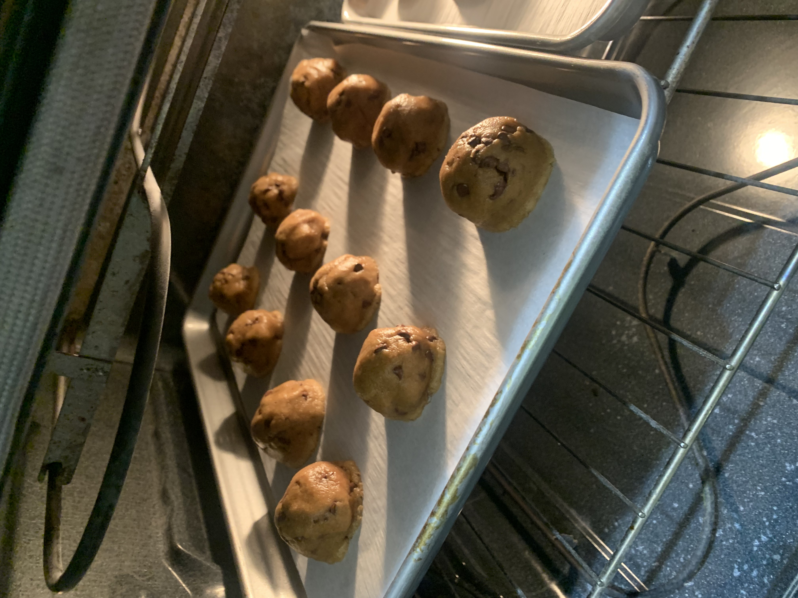
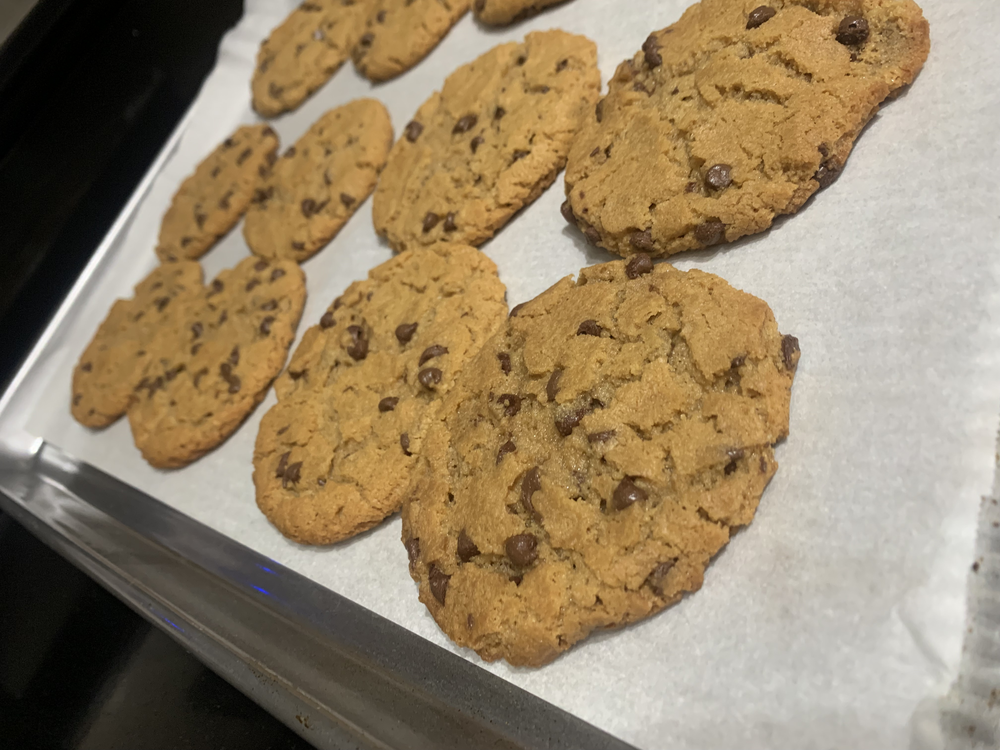

Ingredients
- 2 1/2 cups (318 grams) bleached all-purpose flour
- 1 teaspoon baking soda
- 1 teaspoon baking powder
- 1 teaspoon fine sea salt
- 1 stick (113 grams) unsalted butter
- 3/4 cup (202 grams) creamy peanut butter
- 1/2 cup (100 grams) granulated sugar
- 1 cup (200 grams) packed dark brown sugar
- 2 large eggs plus 1 egg yolk, at room temperature
- 2 teaspoons vanilla
- 2 cups (340 grams) semisweet chocolate chips
💡 Click ingredients to check them off as you gather them!
Instructions
- Prep: Preheat oven to 350ºF. Line baking sheets with parchment paper.
- Mix dry ingredients: In a medium bowl, whisk together the flour, baking soda, baking powder, and salt.
- Mix wet ingredients: In a large heat-safe bowl, microwave the butter until melted. Vigorously stir the peanut butter into the hot butter until well combined. Stir in the granulated sugar and brown sugar until well combined. Add the eggs and yolk, one at a time, stirring well after each addition. Add in the vanilla. Gradually stir in the flour mixture until just combined. Stir in the chocolate chips.
- Divide the dough: Divide the dough into 3-tablespoon sized balls using a large spring-loaded cookie scoop and drop onto prepared baking sheets. Flatten dough slightly into disc shapes with your palms. Dot each disc with a few extra chocolate chips for picture-perfect cookies.
- Bake: Bake for 12 minutes, or until golden brown. Let cool for 5 minutes before removing to wire racks to cool completely.

